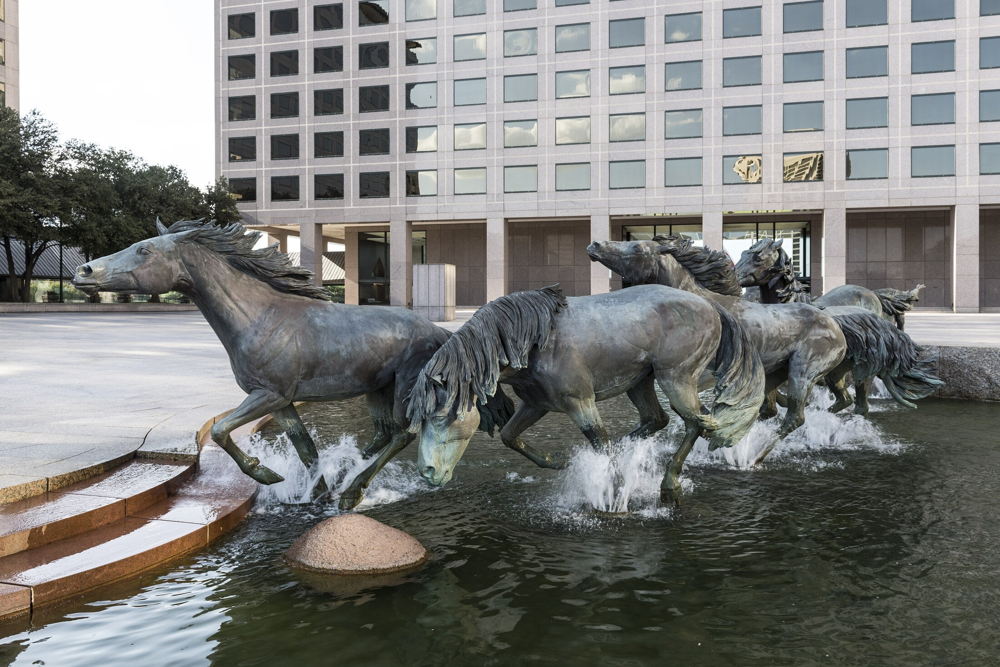
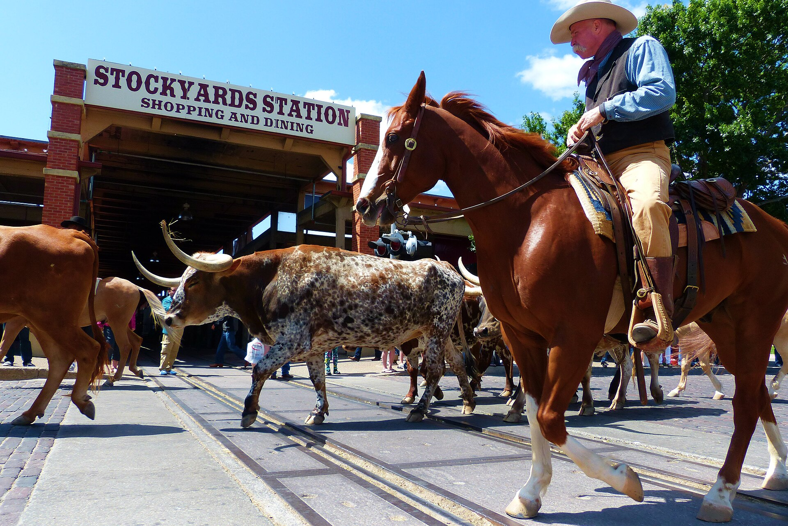
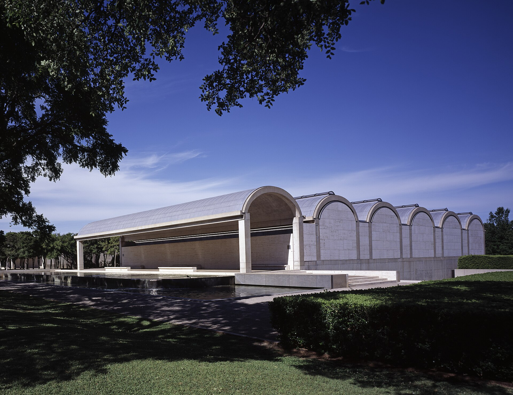
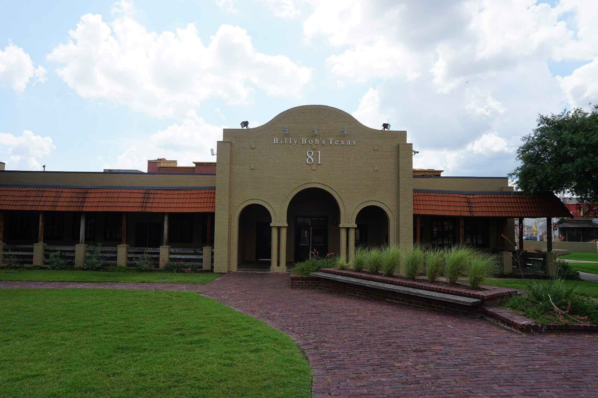

Uptown / Harwood
Polished, walkable, bars everywhere.
Stay here if Friday and Saturday nights matter. You can start with Happiest Hour, walk Katy Trail, use the M-Line trolley, and keep most rides short.
A long weekend in
Where to stay, what is actually worth doing, the rooftop and club plan for two late nights, and a Fort Worth day west without wasting the weekend on hiking logistics.
For this trip, the best neighborhood is the one that removes friction after midnight: close to Katy Trail, Klyde Warren Park, the Arts District, rooftops, cocktail bars, and short rides to Deep Ellum or Bishop Arts.
Polished, walkable, bars everywhere.
Stay here if Friday and Saturday nights matter. You can start with Happiest Hour, walk Katy Trail, use the M-Line trolley, and keep most rides short.
Better hotel scene, less natural walking.
Book it if the pool/design hotel matters more than stepping straight into Uptown. It works, but assume rideshares for most nights.
For your real choice, book Marriott Dallas Uptown if the price is close. Book Canopy by Hilton Dallas Uptown if it is meaningfully cheaper or you prefer West Village/Cityplace. Both work; Marriott is slightly better for the exact nightlife + Arts District route.
3033 Fairmount Street. More central for Harwood, Happiest Hour, Klyde Warren, the Arts District, and short late-night rides. Pick it if the rate difference is small.
Official hotel2950 Cityplace West Blvd. Better if you want West Village, Cityplace/Uptown Station, M-Line access, and a calmer neighborhood start. Not a mistake at all.
Official hotelRooftop pool, proper Uptown address, and the least friction if Saturday/Sunday include Arts District, Harwood, and Katy Trail.
Hotel pageThe exact Canopy you meant. Good for M-Line, West Village, Cityplace/Uptown Station, and an easy north-Uptown base.
Hotel pageThe upgrade version: design-forward, lively, and close to the strongest Dallas night-out geography.
Michelin pageBetter only if you want Midnight Rambler downstairs and a Dealey Plaza / Arts District morning from downtown.
Michelin pageChecked online on June 7, 2026. This is the compact booking desk: what to buy, what is free, and what can wreck the plan if you forget the hours. If you want Irving and Fort Worth by train on the same day, make it Saturday.
Built for a 10pm Friday arrival, two clubbing nights, one Saturday train day combining Irving/Las Colinas and Fort Worth, then a lighter Dallas Sunday.
Do not book a serious dinner Friday. Check the club calendar before landing, then commit to one late-night destination instead of bouncing across town.
Stay for Billy Bob's Texas if you want the honky-tonk version. If you miss the last TRE, budget for a late rideshare back to Dallas.
Sunday should recover from the Saturday rail day. Keep it Dallas-only unless a specific Toyota Music Factory event is more important than rest.
Monday is a museum-closure minefield: do not plan Sixth Floor, DMA, Nasher, Kimbell, Modern, or Amon Carter for the final morning.
Four live Google map embeds, route buttons from either hotel, and readable pin lists so the actual places stay visible even when the embedded map hides labels. Read Saturday as one rail sequence: Uptown to Irving first, then TRE west to Fort Worth.
This is the corrected combined day: DART Orange Line to Las Colinas, short Irving sightseeing, then back through Dallas for TRE to Fort Worth.
Use this for Sunday Dallas, after the Saturday rail day. M-Line + rideshares keep it easy.
First leg of the Saturday train day: photogenic, low-stress, and tight enough to still reach Fort Worth.
Second leg of Saturday: transfer back toward Dallas, catch TRE west, then focus Fort Worth on Stockyards + rodeo.
Keep the weekend urban: walks, rooftops, galleries, restaurants, and one big Fort Worth detour. Skip the regional hiking/VTT layer this time.
The official Dallas tourism framing backs a city weekend built around culture, green-space transitions, neighborhoods, food, and nightlife rather than regional hiking.
Visit DallasMandalay Canal, Lake Carolyn, Mustangs, and Toyota Music Factory are the useful hits. The plan keeps them compact before the TRE transfer.
Visit IrvingThe official Fort Worth angle points to Stockyards, live music/rodeo, and major museums, which matches the Saturday rail day.
Visit Fort WorthDallas Museum of Art, Nasher Sculpture Center, Meyerson, Winspear, and Klyde Warren next door. This is the cleanest culture-and-walk block.
A deck park over the freeway, stitching Uptown to downtown. Best as a transition rather than a destination.
Golden-hour walk or bike on Katy Trail, then use the free McKinney Avenue trolley as the original Dallas move.
Independent shops, murals, coffee, and a softer Sunday pace. Pair it with Written By The Seasons.
Murals by day, clubs and live music after dark. Go with intention, then rideshare back.
Cedar Hill State Park, Cedar Ridge Preserve, and Boulder Park are good regional options, but wrong for a late-arrival, nightlife-heavy first Dallas weekend.
This is the first half of Saturday, not a separate day. Keep Irving tight: a rail stop, a few good photos, maybe a short canal moment, then move toward TRE for Fort Worth.

Do Mustangs of Las Colinas and Mandalay Canal as a compact 75-100 minute stop before heading back toward the TRE transfer.
A gondola is only worth it if booked early enough to protect the Fort Worth cattle drive and rodeo timing.
Interesting, but wrong for this weekend plan: guided tours are Tue-Fri, and it would break the Saturday Irving + Fort Worth rail rhythm.
Do this. It is distinctive, free, right by the rail/canal area, and gives Irving a real point instead of feeling like a random suburb stop.
Short waterfront loop, good for a coffee walk. Keep it to 25-35 minutes if Fort Worth is still the main event.
Worth it romantically, but it consumes the schedule. Book the earliest practical slot or skip.
Legit gallery backup if the weather is bad. Good, but less iconic than Mustangs + canal for this specific trip.
Friday should be efficient and late. Saturday is the big rail day: Irving first, Fort Worth second. For Saturday night, choose rodeo/Billy Bob's or return to Dallas after Fort Worth.
Guide du Routard is right to separate Fort Worth from Dallas. Since the plan also includes Irving, keep Fort Worth focused: Stockyards, 4pm cattle drive, rodeo, and Billy Bob's if the return works.

The headline western move: longhorns on East Exchange Avenue at 11:30am and 4pm, free and weather permitting, then saloons, bootmakers, and the old Livestock Exchange.

Kimbell is free for the permanent collection; The Modern is $16 but free Fridays; Amon Carter is free. Pick one, not all three, if you slept late.

Stay late if you want the honky-tonk version. Billy Bob's is open until 2am Friday/Saturday; concerts and bull riding are separate event decisions.
For the Saturday train day, choose places that sit near Las Colinas or the Stockyards. Dallas Michelin anchors stay below for Sunday or for a cleaner dinner night.
Deep Ellum sushi counter. Reservation-hard, best if you skip the Fort Worth late night.
Michelin-star splurge dinner. Better for Saturday/Sunday than Friday arrival.
Knox-Henderson dinner before a cleaner Dallas night.
Bishop Arts brunch/lunch, strongest fit for Sunday.